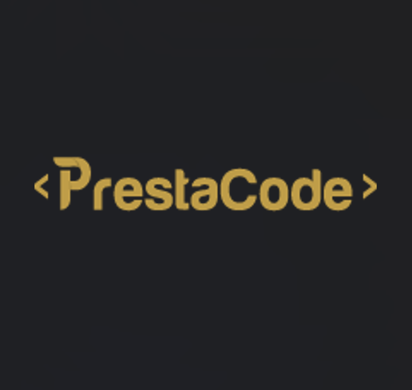
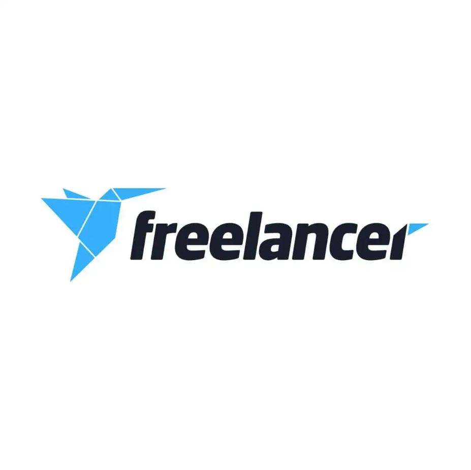

Professional Experience

Sep 2024 - Present
Lemon Interactive
Founder & Developer
Currently building a sustainable online marketplace for users in Saudi Arabia to buy and sell quality pre-owned clothes, books, and collectibles. The platform promotes circular consumption and eco-friendly living while offering affordable options.
- Responsible for the full development process, including design and implementation
- Developing scalable cloud infrastructure to support marketplace operations
- Implementing DevOps practices for continuous deployment
Startup
E-commerce
Cloud Architecture
DevOps

Jul 2025 - Present
Actia Engineering Services
Azure Cloud Intern - EV Battery Analytics
Developed an end-to-end IoT analytics solution for electric vehicle battery monitoring, from sensor simulation to predictive analytics and real-time dashboard visualization.
- Python IoT Simulator: Built a comprehensive Python simulator that mimics real EV battery sensors, sending telemetry data to Azure IoT Hub
- Cloud Infrastructure: Architected complete Azure infrastructure including IoT Hub, Stream Analytics, Cosmos DB, and Azure ML services
- Data Pipeline: Implemented real-time data streaming and processing pipeline for battery telemetry analysis
- Machine Learning: Developed and trained ML models for battery failure prediction and State of Charge (SOC) estimation
- Full-Stack Dashboard: Created an Angular + Spring Boot dashboard with real-time visualization and predictive analytics
- Cloud ML Deployment: Deployed machine learning models to Azure cloud for scalable predictions
Python
Azure IoT Hub
Stream Analytics
Cosmos DB
Azure ML
Angular
Spring Boot
Predictive Analytics

Jun 2024 - Aug 2024
Prestacode
Full-stack Developer
Developed a comprehensive billing system using Angular for the frontend and Spring Boot for the backend.
- CRUD Functionality: Seamlessly managed invoices, clients, and payment methods
- User-friendly Interface: Designed and implemented a responsive UI leveraging Bootstrap
- Backend Integration: Built RESTful APIs with Spring Boot for efficient data management
- Scalability & Performance: Optimized the system for future enhancements
Angular
Spring Boot
MySQL
RESTful APIs

Jan 2024 - May 2024
Freelance Project
Full-stack Developer
Developed a comprehensive Complaints Management System, improving issue resolution efficiency.
- Automated Email Notifications: Implemented email module to notify users about complaint statuses
- Comprehensive Statistics: Created services to generate detailed reports and analytics
- Advanced Search: Designed dynamic search features for efficient complaint location
- Security Enhancements: Implemented robust security measures
Symfony
PHP
JavaScript
MySQL
Jul 2022 - Sep 2022
Tunisie Telecom
Network Engineering Intern
Gained hands-on experience in telecommunications network infrastructure.
- Configured and maintained networking equipment
- Assisted in designing and implementing telecommunications networks
- Enhanced infrastructure reliability to support 50+ additional devices
- Worked closely with senior engineers to troubleshoot network issues
Networking
CCNA
Routing
Switching